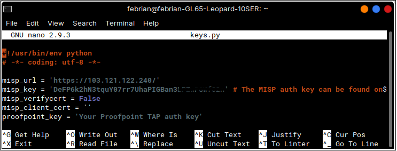
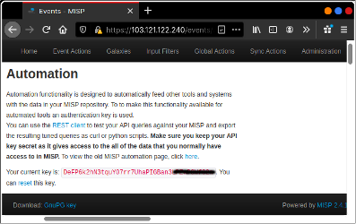

Usage (Penggunaan)¶
Penggunaan MISP Docker¶
Melakukan inisiasi database
$ docker run -it --rm \
> -v /docker/misp-db:/var/lib/mysql \
> harvarditsecurity/misp /init-db
Menjalankan container
$ docker run -it -d \
> -p 443:443 \
> -p 80:80 \
> -p 3306:3306 \
> -p 6666:6666 \
> -v $docker-root/misp-db:/var/lib/mysql \
> harvarditsecurity/misp
Mengakses web URL di browser
https://localhost (atau sesuai konfigurasi pada MISP_FQDN)
Username : admin@admin.test
Password : admin
Login ke MISP web dengan username dan password default. Selanjutnya lakukan perubahan pada password default.
Penggunaan PyMISP¶
Penggunaan Add Event Otomatis (Auto Cache dan Fetch Events) PyMISP Per 1 Feed.
Masuk ke direktori PyMISP/examples
$ cd PyMISP/examples
Salin file keys.py.sample menjadi file keys.py
$ cp keys.py.sample keys.py
Modifikasi konfigurasi keys.py sesuai API key dari MISP yang terdapat pada Automation section di MISP web
$ nano keys.py
Contoh konfigurasi keys.py :
 Modifikasi script Python untuk cache feed dan fetch events pada file auto_cache_fetch.py seperti berikut.
#!/usr/bin/env python
#-*- coding: utf-8 -*-
from keys import misp_url, misp_key, misp_verifycert
import argparse
from pymisp import ExpandedPyMISP
if __name__ == '__main__':
parser = argparse.ArgumentParser(description='Cache Feed and Fetch Evens from Feed.')
parser.add_argument("-f", "--feed", required=True, help="feed's ID to be Fetched")
args = parser.parse_args()
misp = ExpandedPyMISP(misp_url, misp_key, misp_verifycert)
misp.cache_feed(args.feed)
misp.fetch_feed(args.feed)
Jalankan file python auto_cache_fetch.py dan beri nomor ID
python auto_cache_fetch.py -f 12
Pada website MISP akan muncul seperti berikut
Penggunaan Add Event Otomatis (Auto Cache dan Fetch Events) PyMISP Lebih dari 1 Feed Menggunakan Cronjob
Masuk ke direktori PyMISP/examples
$ cd PyMISP/examples
Salin file auto_cache_fetch.py menjadi auto_cache_fetch_cron.py
$ cp auto_cache_fetch.py auto_cache_fetch_cron.py
Modifikasi script Python untuk cache feed dan fetch events lebih dari 1 feed
#!/usr/bin/env python
#-*- coding: utf-8 -*-
from keys import misp_url, misp_key, misp_verifycert
import argparse
import time
from pymisp import ExpandedPyMISP
if __name__ == '__main__':
misp = ExpandedPyMISP(misp_url, misp_key, misp_verifycert)
for x in range(3,5):
print ("Start: %s" % time.ctime())
misp.cache_feed(x)
misp.fetch_feed(x)
print (x)
print ("End: %s" % time.ctime())
time.sleep(60)
Modifikasi file crontab dengan menambahkan konfigurasi berikut untuk membuat crontabnya.
*/2 * * * * /usr/bin/python3 /root/PyMISP/examples/auto_cache_fetch_cron.py
Script tersebut memiliki pengertian bahwa setiap 2 menit sekali, feed dengan ID 3 dan ID 4 akan secara otomatis berkala melakukan auto cache dan fetch events.
Pada website MISP akan muncul tampilan seperti berikut.

{kind=link}
{kind=link}
{kind=link}
{kind=link}
{kind=link}
{kind=link}
{kind=link}
{kind=link}